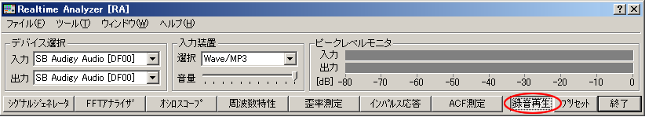
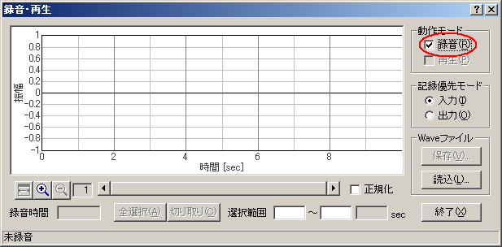
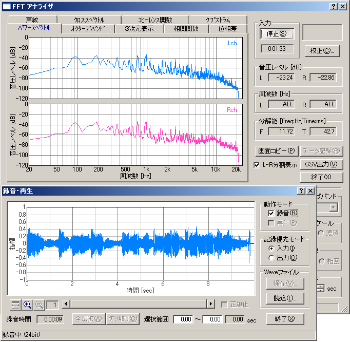
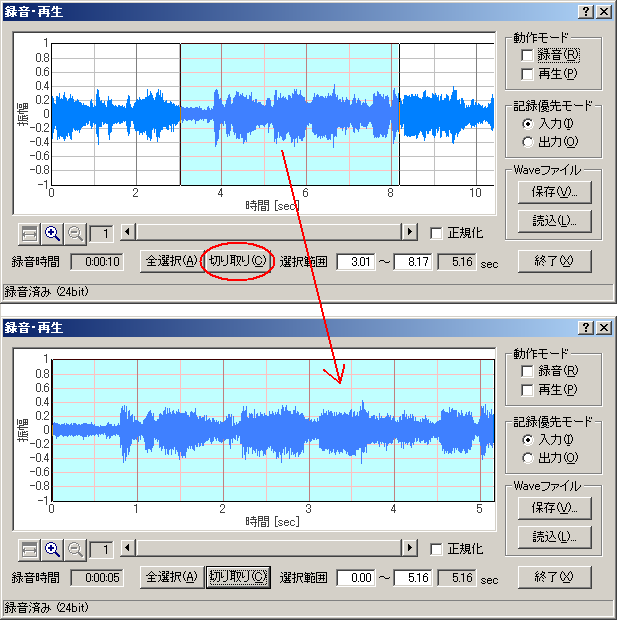

DSSF3 > RA > 操作マニュアル > RAの機能を利用する
サウンドレコーダー（録音再生機能）
リアルタイムアナライザ（以下、RAと表記）の再生機能を使うと、約10分までの録音が可能です。再生と同時にFFTアナライザによるパワースペクトル、オクターブバンド分析などが繰り返し可能になります。
操作方法
- RAのメインウインドウで[録音再生]ボタンをクリックし、[録音・再生]ウィンドウを開きます。

- 新しく音源を録音する場合、[録音]をチェックしてください。再生は、録音した音源または読み込んだWAVEファイルをFFアナライザ等の測定機能で測定することを目的としています。

- FFTアナライザ（又はオシロスコープ）を開き、[開始]ボタンをクリックすると、FFTアナライザ(オシロスコープ）による測定が開始され、同時に録音が開始されます。ここでシグナルジェネレータを開始すると、シグナルジェネレータによって再生された信号がレコーダーで録音されます。録音の終了は、レコーダーではなく[開始]ボタンを押したウインドウの[停止]ボタンをクリックしてください。

- 録音した音源を再生する時は、レコーダーの動作モードの[再生]をチェックし、FFTアナライザ(オシロスコープ)の[開始]ボタンをクリックしてください。録音された音源が再生され、FFTアナライザによる測定が開始されます。
- 波形上でマウスを右クリック後ドラッグすると、切り取り範囲を選択できます。選択された範囲は青く表示されます。ここで[切り取り]ボタンをクリックすると、選択範囲のみが残り、その他の範囲は削除されます。

- 録音された音源を保存する場合は、[保存]ボタンをクリックし、名前をつけて任意の場所に保存してください。
- [読込]ボタンをクリックすると、あらかじめ保存してあるWAVEファイルを読み込むことができます。この状態でFFTアナライザ(オシロスコープ)の[開始]ボタンをクリックすると、読み込まれたWAVEファイルの分析が開始されます。また、WAVEファイルのサンプリング周波数に合わせて測定条件が設定されます。
DSSF3 > RA > 操作マニュアル > RAの機能を利用する